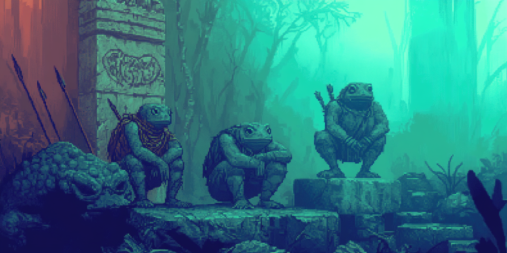
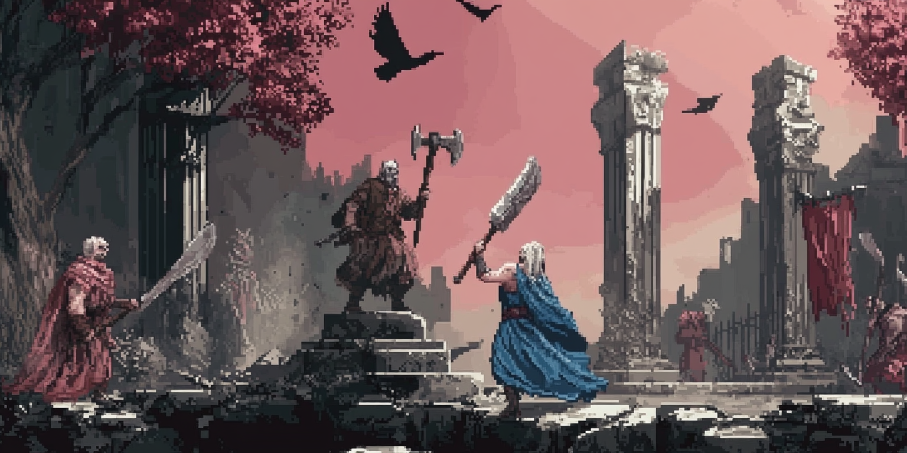

A comprehensive race and religion mod for Songs of Syx
"Eight ancient bloodlines vie for dominance in a world where forgotten gods still whisper. Forge your legacy through blood, steel, or forbidden knowledge as ancient pacts are broken and new alliances forged."
When the old gods fell, they left behind their children—some blessed, others cursed. Now these heirs to divinity and darkness clash across a fractured realm where honor and treachery are merely different faces of survival. The throne awaits one who can master the delicate dance of power.
Parasitic swarm fighters from beyond reality that overwhelm with numbers and biological adaptations.
Alignment: The Outsiders
Worship: The Slain QueenShmalor, the queen of the Agonosh, was slain during the first war of the gods. The Wormlings believe her divine essence transformed into the First Great Worm.
Bloodelves CANTOR
Vampire-like beings who maintain slaves for blood consumption and value status through domination.
Alignment: Servants of Shadow
Worship: The Fallen OneAminion, the fallen one and lord of chaos, requires human sacrifice and promotes submission. The Bloodelves see his teachings as justification for their vampiric nature.
Satyrs ARGONOSH
Female-dominated forest dwellers who value nature, isolation, and defense rather than aggression.
Alignment: Children of Light
Worship: The LeaderAthuri Astari, the leader and greatest of the Astari, defeated his brother Bardok in both wars against him. The Satyrs revere him as the protector of the natural world.
Hellspawns TILAPI
Demonic entities that embody chaos and destruction, building their society on domination and cruelty.
Alignment: Servants of Shadow
Worship: The Fallen OneAminion, the fallen one and lord of chaos, is the primary deity of the Hellspawns. Their society celebrates suffering as a path to power, believing that through chaos they bring about Aminion's vision.
Froggians Q_AMEVIA

Amphibious beings who embody wisdom and technology with a pacifist nature, valuing knowledge above all.
Alignment: Children of Light
Worship: The LeaderAthuri Astari, the leader and greatest of the Astari, is revered by the Froggians for his wisdom and leadership. They see his teachings as the path to enlightenment and peaceful coexistence.
Pasunkas CRETONIAN
Spiritual martial artists who value discipline and balance, following the philosophy of "Push-up Taijutsu."
Alignment: The Outsiders
Worship: The CreatorCrator Astari, the foremost creator of the Astari, is viewed by the Pasunkas as the ultimate embodiment of physical and spiritual perfection, inspiring their martial philosophy.
Finestorians DONDORIAN
Craftsmen who value skill and honest labor, direct and loyal but can be isolationist and judgmental.
Alignment: Heirs of Balance
Worship: The CreatorCrator Astari, the foremost creator of the Astari, is deeply revered by the Finestorians who believe that creating objects of quality is the highest form of worship, seeing each crafted item as an echo of his divine creation.
Northmen HUMAN

Pragmatic traders and warriors who value ambition and clan reputation, driven by practicality and competition.
Alignment: Heirs of Balance
Worship: The CreatorCrator Astari, the foremost creator of the Astari, is respected by the Northmen who believe he created humans with ambition and adaptability to thrive in any environment.
Features
8 Unique Playable Races
Each with distinct abilities, strengths, weaknesses, and cultural traits:
Wormlings (GARTHIMI)
Bloodelves (CANTOR)
Satyrs (ARGONOSH)
Hellspawns (TILAPI)
Froggians (Q_AMEVIA)
Pasunkas (CRETONIAN)
Finestorians (DONDORIAN)
Northmen (HUMAN)
4 Deity Temples
Ancient gods with unique bonuses and racial preferences:
The Leader (Athuri)
The Fallen One (Aminion)
The Creator (Crator)
The Slain Queen (Shmalor)
Void Technology System
Harness the power of the void with specialized buildings and mechanics:
Void Ore Mining
Crystal Refineries
Void Nexus
Void Amplifiers
Void Gateways
Custom Music
Immersive soundtrack that enhances the atmospheric experience of each race and their environments.
Rich Lore
Deep, interconnected stories and backgrounds for each race and deity, creating a cohesive world with complex relationships and histories.
Balanced Gameplay
Each race offers unique advantages and challenges, ensuring varied gameplay experiences while maintaining overall balance.